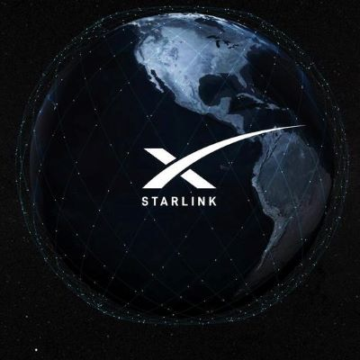

Starlink: Глобальный интернет из космоса
- 🛰️ 2015 — Начало разработки в рамках SpaceX
- 🚀 2019 — Первый запуск 60 спутников Falcon 9
- 🌍 2023 — Покрытие 60+ стран, 4,500+ спутников на орбите
- ⚡ Скорость — До 300 Мбит/с для пользователей
- ⚠️ Проблемы — Конфликты с астрономами (световое загрязнение)
- 🔮 Планы — 42,000 спутников к 2027 году